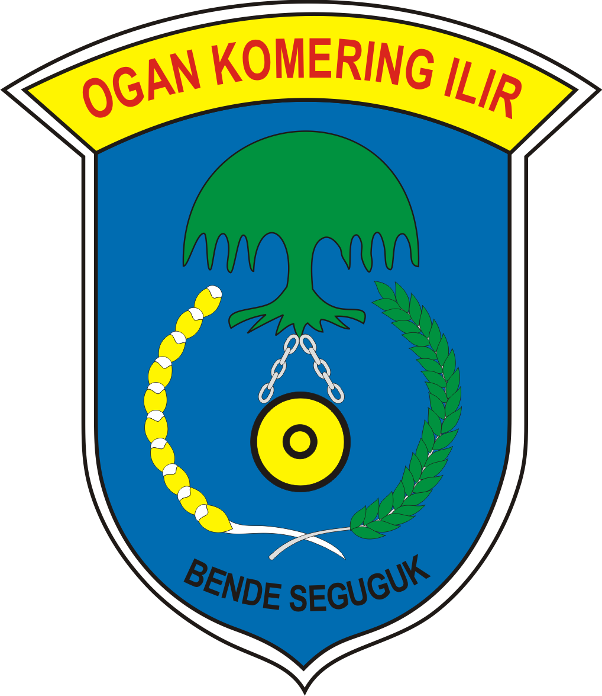

DINAS PENANAMAN MODAL DAN PELAYANAN TERPADU SATU PINTU
KABUPATEN OGAN KOMERING ILIR
Website
JDIH
Jenis Izin
S O P
Investasi
Perzinan Online
WebGis
Pengaduan Masyarakat
Berita Terbaru
Penerapan Tanda Tangan Elektronik (Digital Signature) | KPK Evaluasi Pemberantasan Korupsi